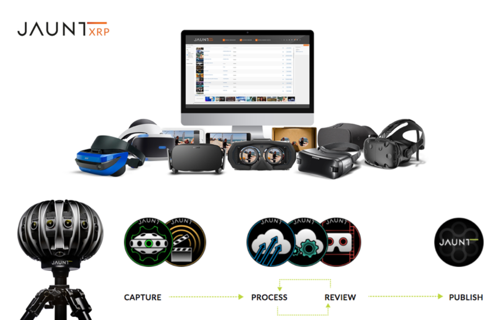

11/2016 - 5/2017 | Jaunt flagship product Jaunt One camera is paired with the camera controller application to access a wide variety of features. While connecting to the camera, users can adjust the camera exposure, capture preview and even get real time views. Jaunt media manager is the gateway tool to transfer recordings between VR camera, cloud services and user local data. It organizes 24 camera footage into formats ready for ingestion, to upload and download from the cloud.
I'm the lead designer to iterate controller UX/UI working along the tool software engineer, and designing download module and iterate solutions with the engineering team and customers.
App is overloaded with lots of features and tangled camera statuses
VR video data size is very large at 50+ GB level sheer size with 4+ formats
Long download time and internet connection stability are also challenging

Fast and slow: During the first week of joining Jaunt, I was able to design the download module right away. However, in the following months, I start learning more about how users actually interact with the Media Manager, only to discover the initial download dialog is not addressing the key pain points. Then I started slow iteration of the download dialog, to craft each interaction to support the user tasks better. The easiest and most accessible, right at hand, solution always poses high risk to actually solving the problem. Because it mostly overlooks the factors and edge cases, and that's where UX matters most. It has to be thought through with all use cases, and test against all possible routes.